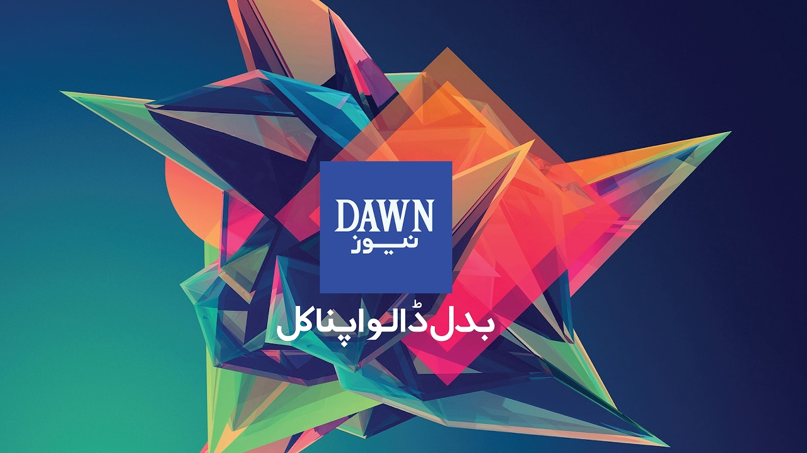

ALL ABOUT THE BIG WORLD WE LIVE IN EXCLUSIVE NEWS TODAY
 Dawn is the largest and oldest English-language newspaper in Pakistan and the country's newspaper of record. Dawn is the flagship publication of the Dawn Group of Newspapers, which also owns the information technology magazine Spider and the advertising marketing and media magazine Aurora.Dawn is the largest and oldest English-language newspaper in Pakistan and the country's newspaper of record. Dawn is the flagship publication of the Dawn Group of Newspapers, which also owns the information technology magazine Spider and the advertising marketing and media magazine Aurora. Dawn is the largest and oldest English-language newspaper in Pakistan and the country's newspaperof record. Dawn is the flagship publication of the Dawn Group of Newspapers, which also owns the information technology magazine Spider and the advertising marketing and media magazine Aurora.Dawn is the largest and oldest English-language newspaper in Pakistan and the country's newspaper of record. Dawn is the flagship publication of the Dawn Group of Newspapers, which also owns the information technology magazine Spiderand the advertising marketing and media magazine Aurora.